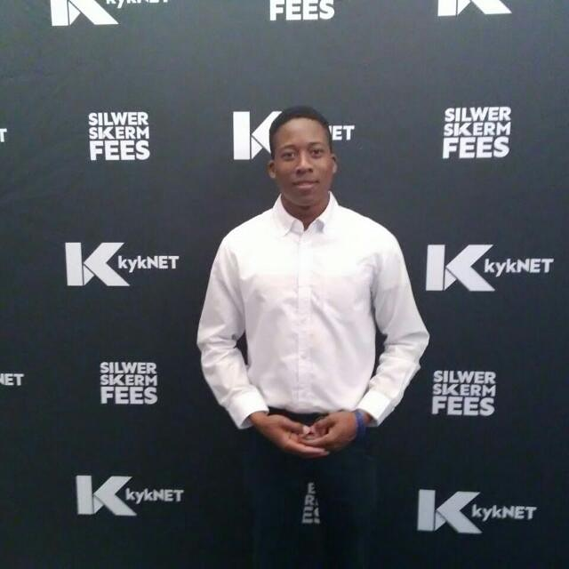

My name is Tafadzwa Felex Madziwadondo. I am a young man age of 25. I did my primary and secondary studies in Zimbabwe soon after i moved to south africa. I have been working as a waiter, cashier and i opened an internet cafe at the age of 20.
During working as a cashier i discovered that i can do more by solving this worlds problems in technology industry, by building and developing websites.
I was motivated by the future technology look around you, you can buy anything, booking, ordering, communicating e.t.c from anywhere using any kind of divice that got internet access. My goal is to become a professional web developer.
| Name: | Tafadzwa Felex |
|---|---|
| Email Address: | tfmadziwadondo@gmail.com |
| Contact Number: | +27 610 355 833 |
For more info please checkout my linkedIn profile by Click me.
| High School: | Success Academy Highfield’s Harare. |
|---|---|
| Subjects Passed: | English, Commerce, Geography, Science, Shona, History. |
| HyperionDev | Fullstack Web Development |
I have build a web site for an online store. the idea is to reach out to every person who have internet access to by what they want from use without leaving their homes. Here is the lint to the project click here.